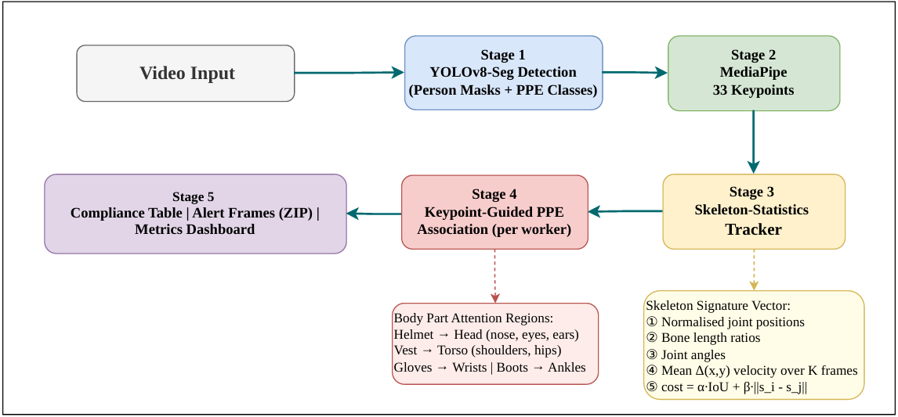

A multi-stage computer vision system combining YOLO11x detection, pose estimation, and skeleton-statistics tracking for real-time construction site safety monitoring.
🚀 Launch Live Dashboard →A 5-stage modular pipeline from video input to compliance alerts.

Figure: SkeletonStat-Track PPE Pipeline — 5-stage architecture from video input to compliance output.
Fine-tuned on the Ultralytics Construction-PPE dataset (11 classes). Detects persons, helmets, vests, gloves, boots, and goggles with high-confidence bounding boxes.
YOLO11x • best.ptExtracts 17 COCO keypoints per person using YOLO11x-Pose. These keypoints form the foundation for both skeleton tracking and PPE-to-person association.
YOLO11x-Pose • 17 KeypointsA custom Hungarian-matching tracker that uses IoU, center distance, and a skeleton signature vector (bone ratios, joint angles, normalized coords) for persistent identity.
Hungarian Algorithm • Skeleton FeaturesMaps each PPE detection to the correct worker by computing spatial proximity between PPE bounding boxes and body-part attention regions derived from keypoints.
Spatial Reasoning • Body RegionsFlags missing PPE per worker, exports annotated alert frames as a ZIP, generates a downloadable CSV compliance log, and renders everything in a real-time Streamlit dashboard.
Streamlit • CSV • ZIP ExportValidation metrics on the Construction-PPE dataset (positive classes only).
| Class | Instances | mAP50 |
|---|---|---|
| Person | 239 | 88.3% |
| Vest | 171 | 86.7% |
| Boots | 151 | 83.8% |
| Goggles | 47 | 82.4% |
| Helmet | 201 | 82.1% |
| Gloves | 136 | 80.0% |
Upload a video or use the built-in test footage to see the pipeline in action.
🖥️ Open Streamlit Dashboard →Hosted on Streamlit Community Cloud. Update the link after deployment.